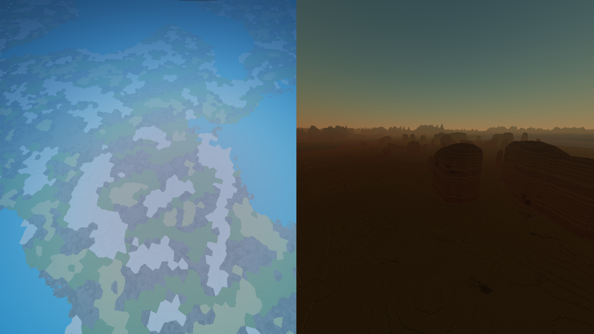
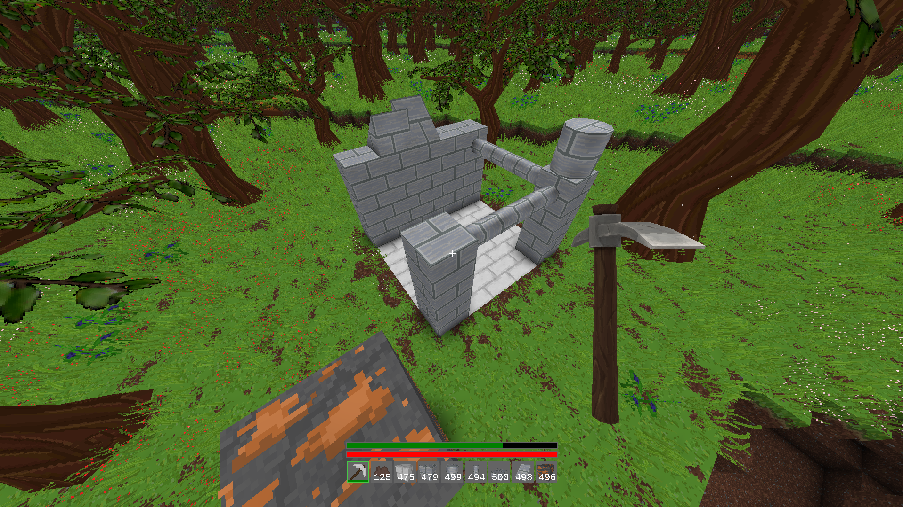

Voxel Game is a multiplayer sandbox game with a procedurally generated open world.
It's a Minecraft-inspired hobby project I created for fun and learning. The game is built using my custom engine, Silver Engine.
Voxel Game is a multiplayer sandbox game with a procedurally generated open world.
It's a Minecraft-inspired hobby project I created for fun and learning. The game is built using my custom engine, Silver Engine.
To generate a procedural world, you need an algorithm that defines terrain height, biomes, and geographical features.
These rules must be randomly generated but still produce natural-looking patterns.
A lot of research has gone into this, and the most common base algorithm is Perlin noise. However,
most third-party libraries generate fixed-size images, which makes them incompatible with infinite worlds.
For an infinite world, you need something faster, simpler, and stateless. That's why I implemented my own noise
functions, designed to behave like pure mathematical formulas. Given just a seed, and an (X, Y) coordinate, you get
a deterministic output, ideal for consistent terrain generation without storing or precomputing anything.
Voronoi noise generates a cell-like pattern with evenly sized regions, making it ideal for biome distribution.
My implementation returns:
It's a grid-based algorithm. Each cell contains a random point (computed on the fly with an offset).
When sampling a coordinate, the algorithm checks nearby cells and selects the closest point,
determining which biome the position belongs to.
Below is a ShaderToy visualization showing how the algorithm is used to distribute biomes.
It uses screen positions as coordinates in the Voronoi algorithm.
Perlin Noise is one of the most popular algorithms for procedural terrain.
In 1D, it creates a natural wave. In 2D, it produces a continuous and organic landscape.
My implementation is stateless and extremely fast: given a seed and a coordinate, it returns a value between 0 and 1.
It's grid-based, which means it's ideal for infinite or large-scale worlds. However, a single call doesn't produce detailed
terrain, so I combine multiple layers of Perlin Noise with different frequencies and amplitudes to generate richer and more
realistic terrain features.
In the Voxel Game, it's used to shape:
Below is a ShaderToy demo:
First, it shows a single call to my Perlin implementation. Then, a layered combination
is shown.
The output is filtered to simulate oceans and continents.
The result of these techniques is a versatile and infinite world generation system, capable of
customizing each biome, enabling smooth transitions, and providing deterministic outputs.
As shown in the left image, it's even possible to know exactly which biome or height will appear before the world is generated.
Below are two in-game screenshots:
Left: view from above, showing biome distribution over a world that hasn't even been generated yet.
Right: a desert scene at sunset.

The world is divided in different layers because depending on the problem to solve, some scales work
better than others.
The first block group is the chunk, like Minecraft but in my game is 30x30x30 blocks.
This is optimal for fast loading-unloading, dynamic lighting calculations, physics, updating blocks,
drawing more complex shapes like ramps, pillars or stairs, and fast compression/decompression.
However, for world generation and for serializing worlds into files, it's more efficient to create a bigger group,
literally a chunk of chunks.
I called it sections, and are 20x180x20 chunks. At this level, the file serialization
and world generation takes place, also a data structure optimal for ray marching is created for rendering.
After understanding the design of the world layout and the properties
of the world generation, it becomes much easier to see how it's possible
to have a render distance of 100km in an infinite procedurally generated world.
Rendering is divided into three different techniques, each with decreasing quality but increasing performance:
To support multiplayer, I developed my own networking protocol.
Using TCP for real-time applications—such as games or physics engines—can be problematic. Often,
you don't need in-order or guaranteed delivery, and paying the overhead for those features can
quickly saturate the network.
Also, it's not possible to have both TCP and UDP connections on the same port.
One possible solution would be to use separate ports for different types of data, but for the sake of simplicity,
and for fun and learning, I built my own networking protocol based on UDP.
Raw UDP comes with limitations: it only sends unconnected messages, with no guarantee
of delivery or ordering, and no concept of connections.
That's why my custom protocol adds several features on top of UDP:
